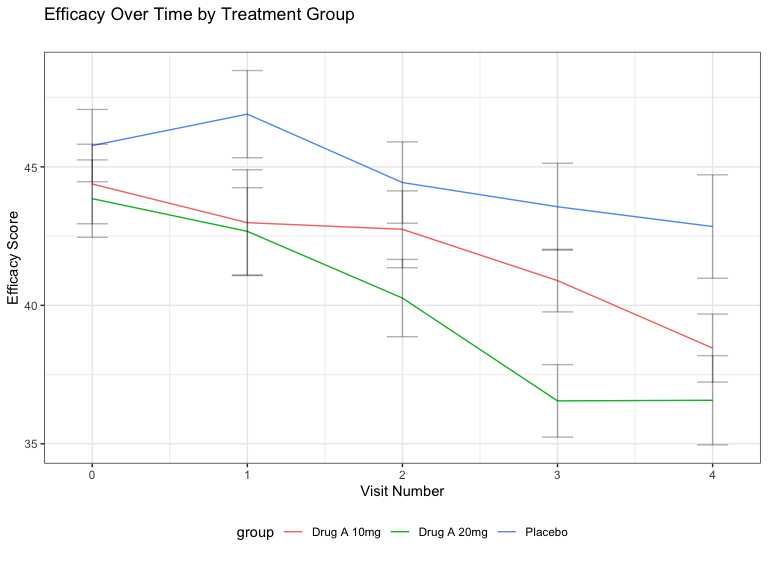
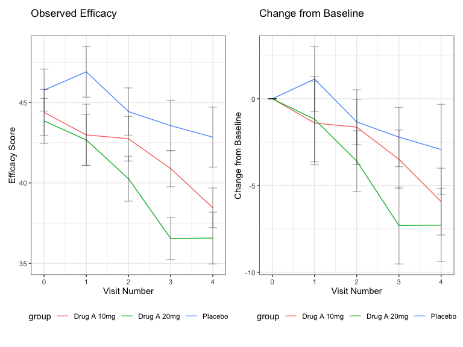
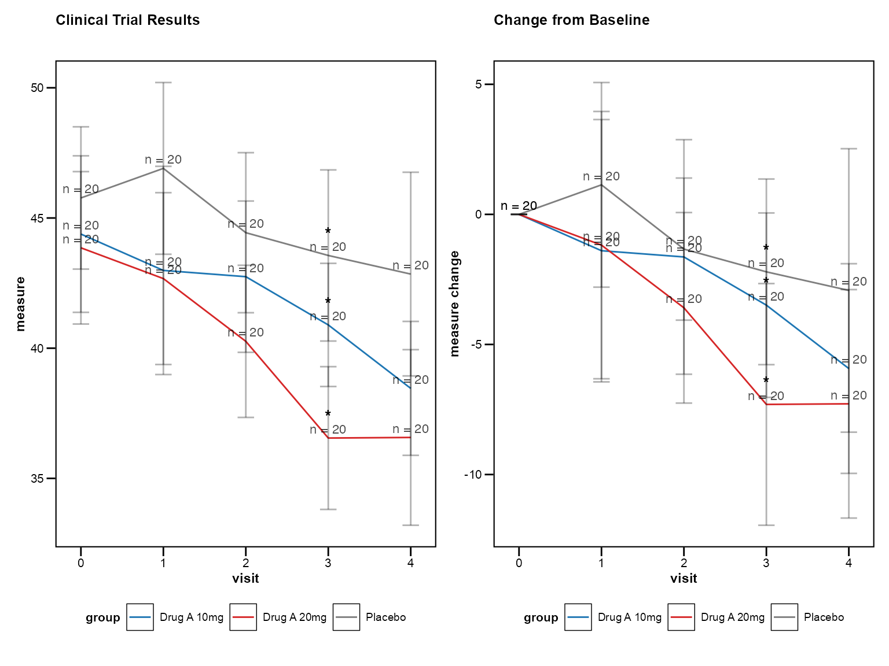
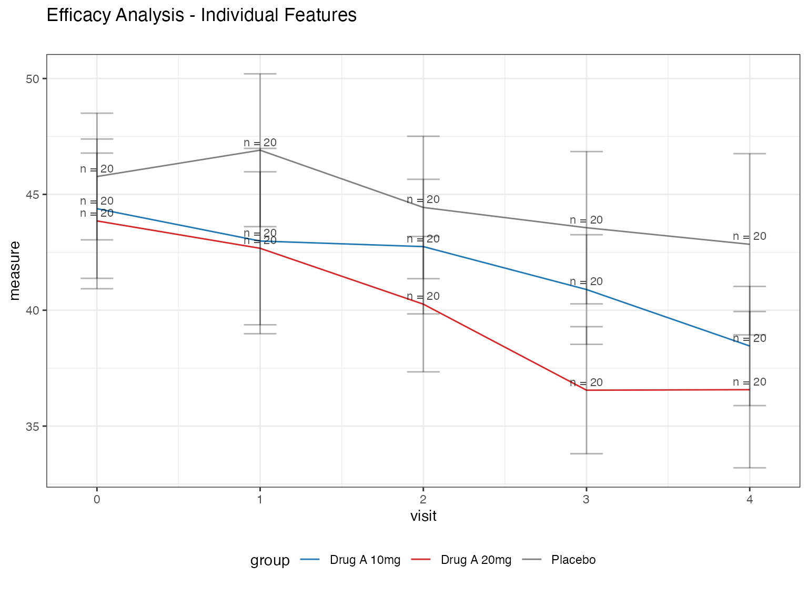
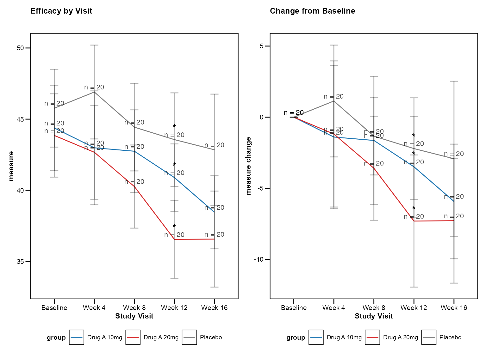
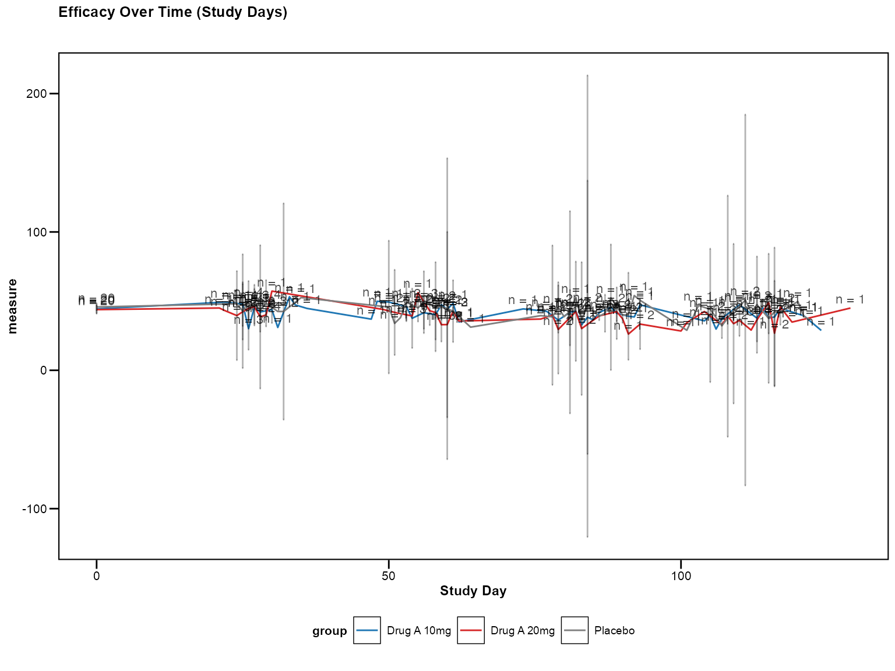
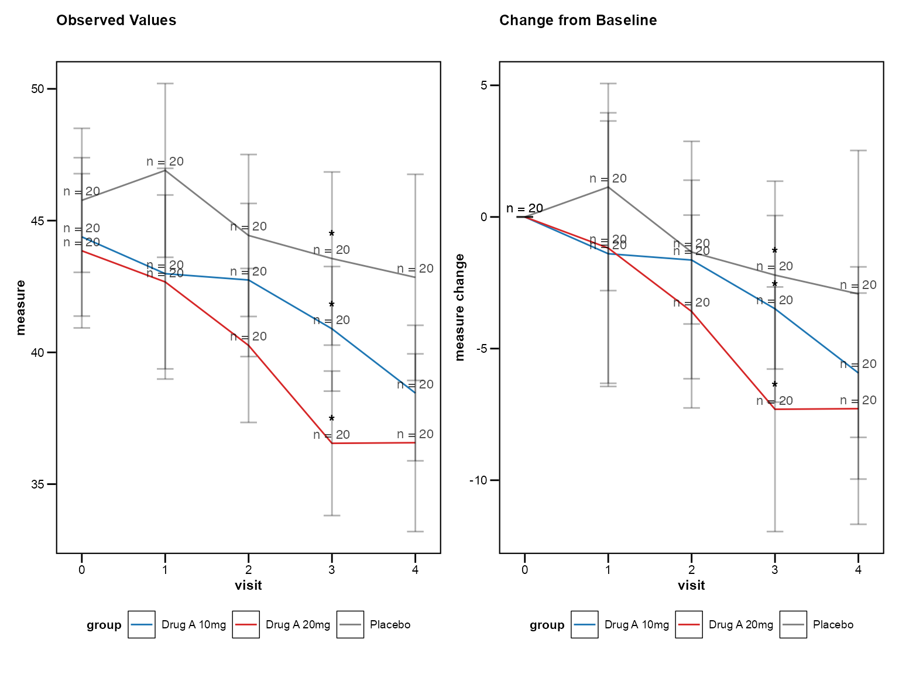
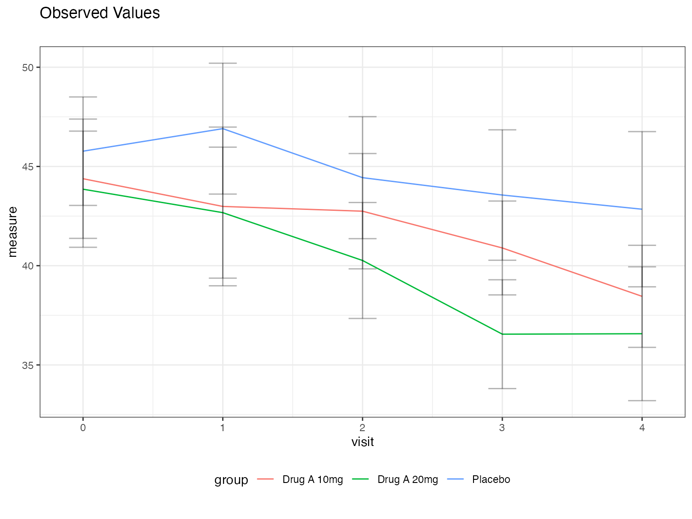
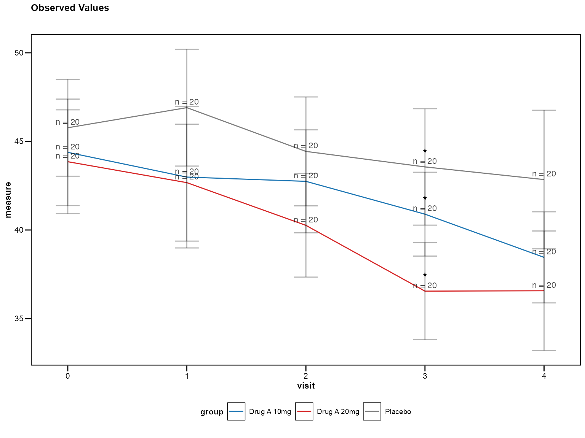

library(zzlongplot)
library(ggplot2)
library(dplyr)
#>
#> Attaching package: 'dplyr'
#> The following objects are masked from 'package:stats':
#>
#> filter, lag
#> The following objects are masked from 'package:base':
#>
#> intersect, setdiff, setequal, unionIntroduction
The zzlongplot package provides specialized
functionality for clinical trial data visualization, with built-in
support for CDISC standards, regulatory requirements, and common
clinical trial analysis patterns. This vignette demonstrates how to use
these clinical-specific features.
Clinical Trial Data Structure
Clinical trial data typically follows the CDISC (Clinical Data Interchange Standards Consortium) standards with specific variable naming conventions:
- SUBJID: Subject identifier
- AVISITN: Analysis visit number
- AVAL: Analysis value (primary endpoint)
- CHG: Change from baseline
- TRT01P: Planned treatment
- SAFFL: Safety population flag
Let’s create a realistic clinical trial dataset:
# Simulate clinical trial data
set.seed(123)
n_subjects <- 60
n_visits <- 5
clinical_data <- expand.grid(
SUBJID = paste0("001-", sprintf("%03d", 1:n_subjects)),
AVISITN = 0:4 # Baseline + 4 follow-up visits
) %>%
mutate(
TRT01P = rep(c("Placebo", "Drug A 10mg", "Drug A 20mg"), length.out = n()),
# Simulate efficacy score (higher = better)
AVAL = case_when(
TRT01P == "Placebo" ~ rnorm(n(), mean = 45 - AVISITN * 0.5, sd = 8),
TRT01P == "Drug A 10mg" ~ rnorm(n(), mean = 45 - AVISITN * 1.5, sd = 7),
TRT01P == "Drug A 20mg" ~ rnorm(n(), mean = 45 - AVISITN * 2.5, sd = 6)
),
VISITN = AVISITN + 1,
VISIT = case_when(
AVISITN == 0 ~ "Baseline",
AVISITN == 1 ~ "Week 4",
AVISITN == 2 ~ "Week 8",
AVISITN == 3 ~ "Week 12",
AVISITN == 4 ~ "Week 16"
)
) %>%
arrange(SUBJID, AVISITN)
head(clinical_data)
#> SUBJID AVISITN TRT01P AVAL VISITN VISIT
#> 1 001-001 0 Placebo 40.51619 1 Baseline
#> 2 001-001 1 Placebo 47.53712 2 Week 4
#> 3 001-001 2 Placebo 44.94117 3 Week 8
#> 4 001-001 3 Placebo 34.99339 4 Week 12
#> 5 001-001 4 Placebo 36.69102 5 Week 16
#> 6 001-002 0 Drug A 10mg 39.73118 1 BaselineBasic Clinical Visualization
Standard Clinical Plot
The simplest way to create a clinical trial visualization:
# Basic clinical plot with observed values
p1 <- lplot(
clinical_data,
form = AVAL ~ AVISITN | TRT01P,
cluster_var = "SUBJID",
baseline_value = 0,
xlab = "Visit Number",
ylab = "Efficacy Score",
title = "Efficacy Over Time by Treatment Group"
)
print(p1)
Observed and Change from Baseline
Clinical trials often require both observed values and change from baseline:
# Both observed and change plots
p2 <- lplot(
clinical_data,
form = AVAL ~ AVISITN | TRT01P,
cluster_var = "SUBJID",
baseline_value = 0,
plot_type = "both",
xlab = "Visit Number",
ylab = "Efficacy Score",
ylab2 = "Change from Baseline",
title = "Observed Efficacy",
title2 = "Change from Baseline"
)
print(p2)
Clinical Mode Features
Enable Clinical Mode
The clinical_mode = TRUE parameter automatically applies
clinical trial best practices:
# Clinical mode with all clinical defaults
p3 <- lplot(
clinical_data,
form = AVAL ~ AVISITN | TRT01P,
cluster_var = "SUBJID",
baseline_value = 0,
clinical_mode = TRUE,
plot_type = "both",
title = "Clinical Trial Results",
title2 = "Change from Baseline"
)
print(p3)
Clinical mode automatically enables: - 95% confidence intervals
instead of standard error - Sample size annotations at each
timepoint
- Clinical color scheme (placebo in grey, treatments in distinct colors)
- Professional theme suitable for regulatory submissions
Individual Clinical Features
You can also enable clinical features individually:
# Individual clinical features
p4 <- lplot(
clinical_data,
form = AVAL ~ AVISITN | TRT01P,
cluster_var = "SUBJID",
baseline_value = 0,
treatment_colors = "standard", # Clinical color scheme
confidence_interval = 0.95, # 95% CI
show_sample_sizes = TRUE, # Show N at each timepoint
error_type = "bar", # Error bars (common in clinical)
title = "Efficacy Analysis - Individual Features"
)
print(p4)
Advanced Clinical Features
Categorical Visits
Clinical trials often use visit names instead of numbers:
# Using categorical visit names
p5 <- lplot(
clinical_data,
form = AVAL ~ VISIT | TRT01P,
cluster_var = "SUBJID",
baseline_value = "Baseline",
clinical_mode = TRUE,
plot_type = "both",
xlab = "Study Visit",
title = "Efficacy by Visit",
title2 = "Change from Baseline"
)
print(p5)
Visit Window Tolerance
Real clinical trials have visit timing variations. Handle this with visit windows:
# Add some visit timing variation
clinical_data_windows <- clinical_data %>%
mutate(
VISIT_DAY = case_when(
AVISITN == 0 ~ 0,
AVISITN == 1 ~ round(rnorm(n(), 28, 3)), # Target day 28 ± 3
AVISITN == 2 ~ round(rnorm(n(), 56, 4)), # Target day 56 ± 4
AVISITN == 3 ~ round(rnorm(n(), 84, 5)), # Target day 84 ± 5
AVISITN == 4 ~ round(rnorm(n(), 112, 6)) # Target day 112 ± 6
)
)
# Plot with visit windows (when this feature is implemented)
p6 <- lplot(
clinical_data_windows,
form = AVAL ~ VISIT_DAY | TRT01P,
cluster_var = "SUBJID",
baseline_value = 0,
clinical_mode = TRUE,
# visit_windows = list(
# "Month 1" = c(21, 35),
# "Month 2" = c(49, 63),
# "Month 3" = c(77, 91),
# "Month 4" = c(105, 119)
# ),
xlab = "Study Day",
title = "Efficacy Over Time (Study Days)"
)
#> Warning: There were 4 warnings in `dplyr::mutate()`.
#> The first warning was:
#> ℹ In argument: `bound_lower = if (...) NULL`.
#> Caused by warning in `stats::qt()`:
#> ! NaNs produced
#> ℹ Run `dplyr::last_dplyr_warnings()` to see the 3 remaining warnings.
print(p6)
Regulatory-Ready Outputs
FDA Theme
Create plots suitable for FDA submissions:
# FDA regulatory theme (when implemented)
p7 <- lplot(
clinical_data,
form = AVAL ~ AVISITN | TRT01P,
cluster_var = "SUBJID",
baseline_value = 0,
theme = "fda",
plot_type = "both",
title = "Figure 1.1: Primary Efficacy Endpoint",
title2 = "Figure 1.2: Change from Baseline",
caption = "ITT Population, LOCF imputation"
)
print(p7)Clinical Utility Functions
CDISC Variable Detection
The package can automatically suggest appropriate formulas for your clinical data:
# Auto-detect CDISC variables and suggest formula
suggestions <- suggest_clinical_vars(clinical_data)
print(suggestions)
#> Suggested formula: AVAL ~ AVISITN | TRT01P
#> Cluster variable: SUBJID detected
#> Baseline: AVISITN = 0Clinical Color Palettes
Get standard clinical color palettes:
# Get clinical color palette
colors <- clinical_colors(type = "treatment", n = 3)
print(colors)
#> [1] "#7F7F7F" "#1F77B4" "#D62728" # Grey, Blue, Red
# Use with custom styling
p8 <- lplot(
clinical_data,
form = AVAL ~ AVISITN | TRT01P,
cluster_var = "SUBJID",
baseline_value = 0,
color_palette = colors
)Best Practices for Clinical Trials
1. Always Show Both Observed and Change
Most clinical protocols require both perspectives:
# Best practice: Show both plots
lplot(clinical_data, AVAL ~ AVISITN | TRT01P,
cluster_var = "SUBJID", baseline_value = 0,
plot_type = "both", clinical_mode = TRUE)
2. Use Confidence Intervals
95% confidence intervals are standard in clinical trials:
# Best practice: 95% confidence intervals
lplot(clinical_data, AVAL ~ AVISITN | TRT01P,
cluster_var = "SUBJID", baseline_value = 0,
confidence_interval = 0.95)
3. Include Sample Sizes
Show sample sizes to indicate data completeness:
# Best practice: Show sample sizes
lplot(clinical_data, AVAL ~ AVISITN | TRT01P,
cluster_var = "SUBJID", baseline_value = 0,
show_sample_sizes = TRUE, clinical_mode = TRUE)
4. Use Professional Themes
Regulatory submissions require clean, professional appearance:
# Best practice: Professional themes
lplot(clinical_data, AVAL ~ AVISITN | TRT01P,
cluster_var = "SUBJID", baseline_value = 0,
theme = "fda", clinical_mode = TRUE)Conclusion
The zzlongplot package provides comprehensive support
for clinical trial data visualization, from basic efficacy plots to
regulatory-ready submissions. The clinical mode feature enables best
practices with a single parameter, while individual features allow for
custom requirements.
Key clinical features include: - CDISC variable recognition -
Clinical color schemes and themes
- Confidence intervals and sample size annotations - Visit window
handling - Regulatory output formats - Professional themes for
submissions
For more examples and advanced features, see the CDISC Compliance vignette.